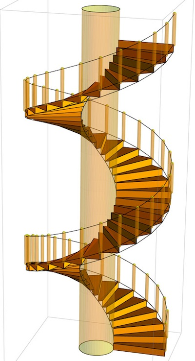
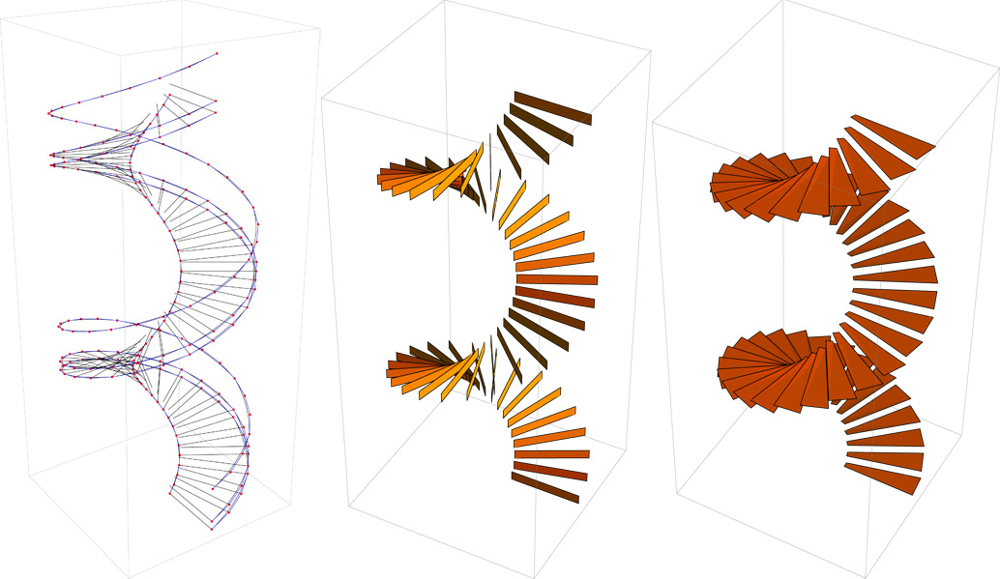

Mathieu Venot
[Naval] | {Computation} | Architecture
D3W_ DIGITAL DESIGN LITERACY 1
23/09/2011 14:00 Categories: Other Work / ENSAPM
// PARAMETRIC HELICOID (With ESTELLE GLINEL)


3D design of a spiral staircase with Mathematica, from the equation of a helix as starting reference.
helix [a_, b_] [t_] := {a Cos[t] , a Sin[t] , b*t} ;
-------------------------
PDF Notebook
-------------------------
{REFERENCES}
- COMPUTING (CFAO Softwares)
- MORPHOLOGY (Alisa Andrasek / Achim Menges)
- MAURIZIO BROCATO & LUCIA MONDARDINI (Geometric methods and computational mechanics for the design of stone domes based on Abeille's bond) [2010]
- JEAN-MARIE DELARUE (Géométrie Constructives des Surfaces Développables)
- STEPHEN WOLFRAM (The Future Of Computation) [2005]
Software : Wolfram Mathematica
Teacher : Philippe MOREL
Consulting (1)
Essay / ENSAPM (3)
Internship / ENSAPM (2)
Other Work / ENSAPM (8)
Projects / ENSAPM (9)
Teaching / ENSAPM (7)
Essay / ENSAPM (3)
Internship / ENSAPM (2)
Other Work / ENSAPM (8)
Projects / ENSAPM (9)
Teaching / ENSAPM (7)
Feb 2016
Jan 2016
Dec 2015
Sep 2015
May 2015
Jan 2015
Jan 2014
Dec 2013
Jan 2013
Jan 2016
Dec 2015
Nov 2015
Oct 2015Sep 2015
Aug 2015
Jul 2015
Jun 2015May 2015
Apr 2015
Mar 2015
Feb 2015Jan 2015
Dec 2014
Nov 2014
Oct 2014
Sep 2014
Aug 2014
Jul 2014
Jun 2014May 2014
Apr 2014
Mar 2014
Feb 2014Jan 2014
Dec 2013
Nov 2013
Oct 2013Sep 2013
Aug 2013
Jul 2013
Jun 2013May 2013
Apr 2013
Mar 2013
Feb 2013Jan 2013
Dec 2012
Nov 2012
Oct 2012Sep 2012
Aug 2012
Jul 2012
Jun 2012May 2012
Apr 2012
Mar 2012
Feb 2012
Jan 2012Dec 2011
Nov 2011Oct 2011
Sep 2011Aug 2011
Jul 2011
Jun 2011
May 2011